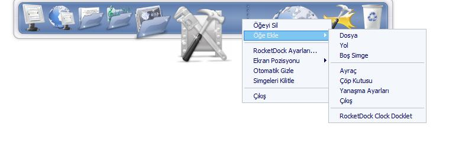
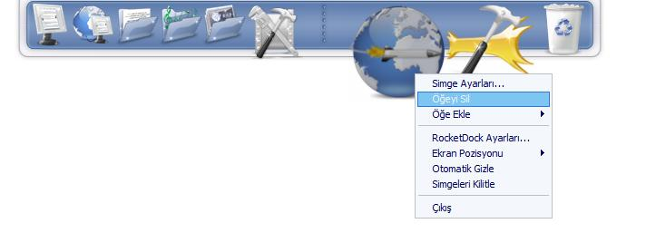
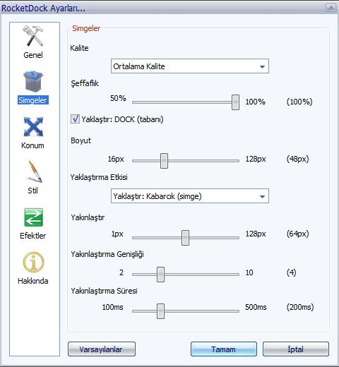
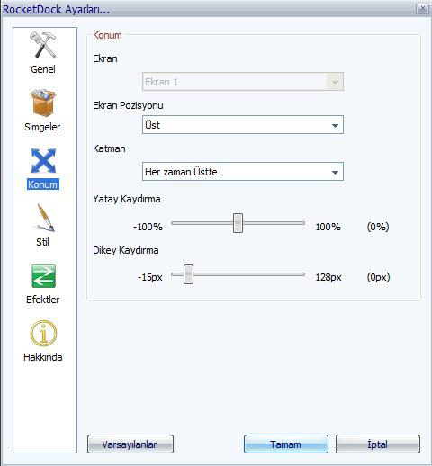

RocketDock
Dökümanı
RocketDock
Dökümanı
Giriş
1. RocketDock ta nedir?
Mac kullanıcılarının ekranında en altta duran ve
üzerinde ikonlar bulunan şık sistem çubuğunu
gördünüz mü? Onun adı “DOCK” . Görmeyenler için,
“Dock” bilgisayarınızın ekranında kenarda duran
ve üzerinde ikonlar barındıran ve sizew
kolaylıklar sunan bir çubuktur. “Dock” ın
özelliği karma karışık olan
masaüstünüzü derli toplu hale getirmek ve sık
kullandığınız programları masaüstünde
tutmaktansa bu çubuğun üzerinde barındırıp size
kolaylık sağlamasıdır.
2. Özellikleri
- Pencereleri görev çubuğuna değil DOCKta Simge durumuna küçültebilirsiniz
- Vista da EŞ Zamanlı gösterim
- Çalışan programları belirten işaret
- Basit tıkla çalıştır özelliği
- Çok ekran desteği
- PNG ve ICO ikonlarını destekler
- İkon yakınlaştırması ve transparanlık
- Otomatik gizleme
- Fare üzerinde açılma
- Pozisyon ve stil belirleme
- Tamamen kişiselleştirilebilir
- ObjectDock Docklet desteği
- MobyDock, ObjectDock, RK Launcher, ve Y'z Dock arayüzleri ile çalışır
- Yavaş bilgisayarlarda da çalışır
- Unicode uyumlu
- Bir
çok dili destekler ve kolaylıkla çevrilebilir.
3. Gereken Minimum Sistem Özellikleri
- Windows 2000/XP/Vista
- 500Mhz veya hızlı CPU
- 10MB RAM boşluk
4. Desteklediği diller
Afrikaans, Albanian, Arabic,
Bangla, Brazilian Portuguese, Bulgarian, Catalan, Chinese Simplified, Chinese Traditional, Croatian, Czech, Danish, Dutch, English, Finnish, French, Galician, Georgian, German, Greek, Hebrew, Hungarian, Indonesian, Italian, Japanese, Korean, Norwegian, Persian, Polish, Portuguese, Romanian, Russian, Serbian (Cyrillic), Serbian (Latin), Sinhala, Slovak,
Slovenian, Spanish, Swedish, Thai, Turkish, Ukrainian-
Çevirmedim Saymakla itmez
Öğeleri Düzenleme
1. Yeni Öğe eklemek
Bir çok kişi Rocket Dock u yükledikten sonra ilk yapmak istedikleri yeni öğerler eklemek. Bunu yapmanın birkaç yolu var:
Eklemek istediğiniz öğeyi kulağından tuttuğunuz gibi Dock un üzerine bırakmanız yeterli; Masaüstü, bir Exploere sayfası, Hızlı başlat çubuğu veya kontrol paneli.
Diğer bir yolu ise RocketDock un üzerine sağ tıklayıp “Öğe ekle” menusunu kullanmak

Buradan isteğinize göre farklı farklı öğeler ekleyebilirsiniz. Buyurun detaylı inceleyelim.
- Dosya: İstediğiniz dosyayı RocketDocka eklemek için seçebilirsiniz. Tıklandığında gerekli program ile o dosyayı açacaktır.
- Yol: İstediğiniz klasörü RocketDocka eklemek için seçebilirsiniz. Tıklandığında Explorer da açılacaktır.
- Boş ikon: Boş bir ikon ekler daha sonra siz istediğiniz şekilde o ikona özellikler verebilirsiniz bunun için “Simge ayarları” nı seçmeniz yeterli.
- Ayraç: Adı üzerinde ikonları bir birinden ayırıp gruplar haline getirebilirsiniz.
- Çöp kutusu: Çöp kutusunu ekler boşalttığınız<da boş dolu iken dolu simge gözükür..
- Dock Ayarları: Eğer hata ile özellikleri silerseniz bu geri getirir.
- Çıkış:
Kapatmak için düğme oluşturur.
2. Dockletler
Dockletler ROCKETDOCK ile çalışan küçük programlardır. Bunlar RAM kullanır ve sistemin durumuna gore ikonu belirler örneğin Çöp kutusu boş iken bOŞ ikon dolu iken DOLU ikonu kullanır bunların bilgisayarınızda bulundukları yer ise:
C:\Program Files\RocketDock\Docklets (varsayılan yer)
Bu klasördekiler RocketDock ta görmek için aşağıdaki resimdeki menüye gelmeniz yeterli.
Not: RocketDock sadece ObjectDock dockletlerini destekler.
3. Öğeleri Kişiselleştirmek
RocketDock ta görünen tüm öğelerin görünümünü değiştirebilirsiniz. Sadece sağ tıklayın ve “Simge Ayarları”nı seçin
Böylece ikon penceresinden istediğiz ikonu seçebilirsiniz.
Klasörler
Bu klasörde ikonlarınız bulunmakta isterseniz buraya ikon ilave edebilirsiniz:
C:\Program Files\RocketDock\Icons (Varsayılan klasör)
İkonlar
Bu panel size seçtiğiniz klasördeki ikonların ön izlemesini gösterir.
Ön izleme
Öğeniz için hangi ikonu seçtiğinizi gösterir. Varsayılan simge tuşu ise o dosya için varsayılan simgeyi otomatik seçer (bilgisayardaki kullanılan simge seçilir).
Özellikler
Burada ise öğelerinizin etiklerinin görünümü nasıl değişir, Öğe nereye bağlı, ve diğer özel efektler mevcut.
- İsim: Fareniz üzerine gittiğinde gösterilen ad.
- Hedef: Öğelerin bilgisayarda bulundukları yer.
- Başlangıç: Hangi programla çalışıyorsa onu gösterir.
- Tartışmalar: Çalışan program için bilgi verir.
- Çalıştır: RocketDock a bağlı olan öğeyi çalıştırmak için de kullanılır.
- Hedefi Bul: Öğenizin kısa yolunu değiştirmek için kullanılır.
- Açılış Menusu: Bu ise RocketDock ta bulunan öğe için neler yapabilirsiniz menusu oluşturuyor aşağıda resimde örnek var.
4. Öğeleri Silmek
İki ayrı yolu var öğeleri silmenin. Birincisi kulağından tutup boşluğa bıraka bilirsiniz. İkincisi ise öğenin üzerine sağ tıklayıp “Öğeyi Sil” seçeneği

Ayraçları ise sadece kulağından tutup
boşluğa bırakarak silebilirsiniz..
5. Tut kulağından Bırak
Dosyaları yada klasörleri rahatlıkla kulağından tutup Dock a yerleştire bilir hatta Dock üzerinde yerini değiştirebilirsiniz.
Seçtiğiniz dosyayı açmak için Dock kendisi gerekli programı (o dosya bilgisayarınızda hangi program ile çalıştırılıyorsa) seçer ve açar.
Eğer öğe bir klasörle açılıyorsa bunu da hatasız şekilde yapar.
Eğer öğeleri Dock ta ki Çöp kutusuna
götürürseniz yine silineceklerdir.
6. Simge durumuna Küçült
Eğer Pencereleri Dock ta göster özelliğini etkinleştirirseniz çalışan programı yada açık bir sayfa ve ya klasörü simge durumuna küçülttüğünüzde bu ROCKETDOCK a küçülecektir. Ve bu dosyalar Vista da Eşzamanlı çalışır yani film seyrederken media player küçültseniz bil dockta oynamaya devam eder. (eğer masaüstü seçeneklerinden bunu ayarladıysanız.)
İster dosyanın üzerine sağ tıklayın ve “Pencereyi Aç” yada “Pencereyi Kapat” seçeneğini seçin isterseniz sadece sol tuş ile tıklayın yeterli.

İstediğiniz programların DOCK a küçülmesini
engelleye bilirsiniz yani seçim sizin elinizde.
Dock Ayarları
1. Genel
- Dil: RocketDock u kullanmak istediğiniz dili seçin.
- Açılışta Başlasın: Windows açılışında otomatik başlatır.
- Simgeleri Dock’a küçült: Simgeleri Dock a küçültür ve Vista da eş zamanlı gösterir (eğer masaüstü ayarlarınızı yaptıysanız).
- Çalışan Programları belirt: Çalışan programların tepesine küçük siyah bir üçgen koyar.
- Çalışan Programların durumunu göster: Adı üstünde programa geçiş yapar.
- İkonları kilitle: Simgelerin hatayla kaybolmasını veya silinmesini engeller
Kolay ulaşmak için
kontrol tuşuna basmanız yeterli
2. İkonlar

- Kalite: Yakınlaştırma kalitesi.
- Şeffaflık: İkonların ve Dock un şeffaflığı
- Yakınlaştırma Donukluk: İkonların yakınlaştığında donukluğunu sağlar.
- Boyut: Tabi ki hem Dock un hem de ikonların boyutu için.
- Yakınlaştırma Effekti: Yakınlaştırma şeklini değiştirmek için
- Yakınlaştırma: Mouse üzerindeyken ne kadar yakınlaşacak
- Yakınlaştırma Genişliği: Kaç ikon aynı anda yakınlaşacak
- Yakınlaştırma
süresi: Ne kadar hızlı sürede
yakınlaştırılacağı.
3. Konum

- Ekran: Eğer birden fazla monitör kullanıyorsanız her biri için ayrı ayar yapabilirsiniz.
- Ekran Pozisyonu: Dock un ekranın neresinde duracağını belirleyin.
- Katman: Diğer programların üstünde yada gizli çalışması gibi ayarları yapmak için.
- Yatay: Yatay olarak yerini belirleyin.
- Dikey:
Dikey olarak yerini belirleyin.
4. Stil
- Tema: İstediğiniz temayı seçin. Temaların bilgisayarda bulunduğu yer: C:\Program Files\RocketDock\Skins (Varsayılan ikon)
- Şeffaflık: arka yüz ne kadar şeffaf olsun.
- Simge etiketlerini etkinsiz kıl: Simgelerin isimlerini göstermez.
- Font Seç: Font seçin rengini boyutunu da
- Gölde rengi: Fontları gölgelendirin.
- Çerçeve rengi: Çerçevelendirin ve renklendirin.
- Gölge şeffaflığı: Gölgenin şeffaflığı.
- Çerçeve
şeffaflığı: Çerçevenin
şeffaflığı
5. Efektler
- İkon Açma Efekti: İkonların nasıl açılacağı ki genelde animasyonlu olur. Sizde buradan belirliyorsunuz.
- Otomatik Gizle: Dock u otomatik gizler ve fareyi üzerine getirince otomatik açılır.
- Otomatik Gizle Süresi: buradan da otomatik gizleme süresi belirlenir
- Otomatik Gizle Gecikmesi: buradan da gecikme süresi belirlenir..
- Fare üzerinde Aç: Fare üzerinde açılmasını sağlar
- Fare üzerinde
Açma gecikme süresi: Fare üzerindeyken ne kadar
bekleyip açılacağını gösterir.
6. Ayarlara çabuk Ulaşım
RocketDocka sağ tıklayarak bazı ayarları yapabilirsiniz
Ekran pozisyonunu seçebilirsiniz, İkonları kilitleye bilir,
Ekran ayarları, ve otomatik gizle.
İsterseniz RocketDock ayarlarını da buradan
seçebilirsiniz
7. Ayarları sıfırla
“Varsayılan ayarlar” butonu tüm ayarlarınızı sıfırlar ve ilk kurduğunuz şekline geri getirir.
Not: Ve bu sizin hiçbir öğenizi etkilemez.
Kısa Yollar
1. Docku etkinsizleştirmek
Control+Alt+R basarak RocketDock
u saklayıp kapat bilirsiniz ve aynı şekilde geri
getirebilirsiniz
Yardım Aramak ve Yardım Etmek
1. Daha fazla yardıma ihtiyacınız varsa NEREYE gidecekseniz
RocketDock hakkında daha fazla yardıma ihtiyacınız varsa
forum sayfasını ziyaret
etmeniz yeterli. Ve RocketDockun farklı görünümlerini orada
bulabilirsiniz.
2. Çevirilere yardım edin
Eğer size ait dil yoksa dicem ama ben
çevirdim fakat yine de siz beğenmezseniz benim çevirimi
yapacak bir şey yok demicem buradan gerekli bilgilere
ulaşıp kendinizce çevire bilirsiniz. Zaten Fulya
evleniyormuş. Bu çeviride ona benden hediye olsun. Alpfrm
3. Dünyayı saralım
Bunu tüm arkadaşlarınıza ve sevdiklerinize söyleyin
ve onları da ROCKETDOCK ailesine katın ve tüm dünyayı
saralım. Ve forum sayfamızda
istediğiniz soruları sorabilir ve ailemizin bir üyesi
olabilirsiniz.
4. Bizi ziyaret edin
Punk Software Swag
Shack. İsminde çevrimiçi bir
satışımız var Bekleriz. T-shirt
gibi birçok güzel ürünümüz var. Ve masaüstü araç gereçleri. Ben alpfrm olarak size tavsiye ediyorum.